[The hyperrealist path to network spirituality]
Maroua Gaddur
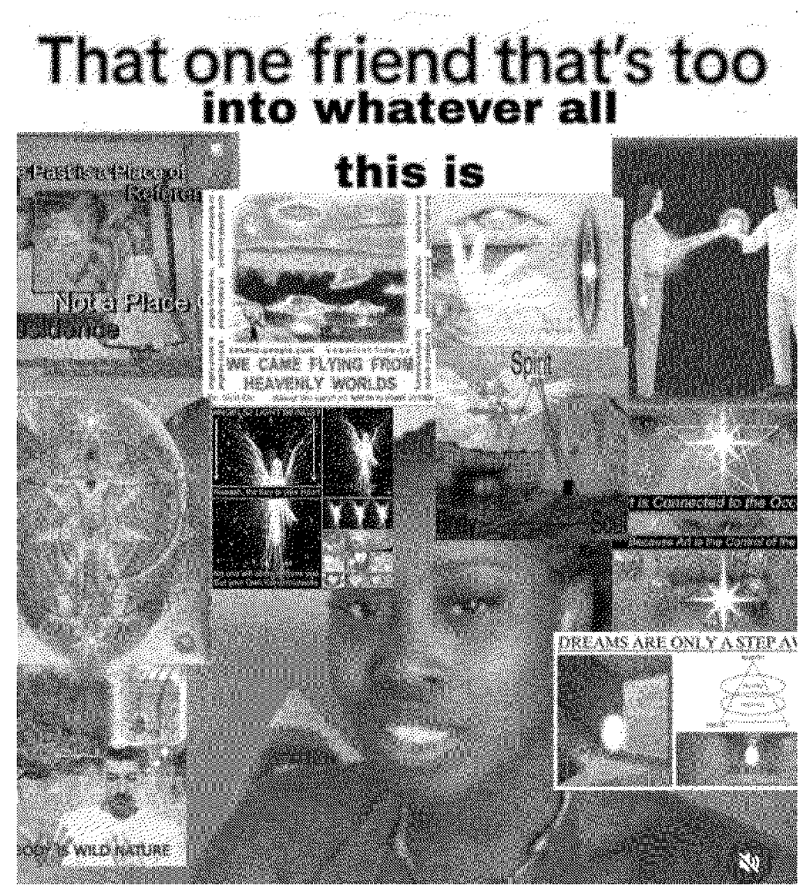
You scroll through TikTok. “ha-ha funny cat video” Like! You scroll to the next video, and the next one. An unfamiliar face appears on your “for you page”, It’s a Pokémon card tarot reading, without a caption and no hashtags, just like the creator of the video mentions. Similarly to regular tarot, the creator of the video offers insights into the cards and suggests what this could mean for you. You click on their profile. “Readings are for entertainment." But what happens when a viewer fully resonates with the content? What if they truly start believing that the TikTok algorithm almost serves as a sign of fate? I mean... this video was made for you right? It’s on your “for you” page. This is just a small glimpse into the trending and expanding world of network spirituality, where spirituality is constantly influenced by networks, algorithms and internet culture. This term was coined by Charlotte Fang, creative director of digital art collective Remilia Corporation, and further explained in their article “Network Spirituality, Collected Commentaries”:
“Network spirituality is the futurist embrace of experiential hyperreality found in the web's accelerated networks, a lens in which to efficiently (& safely) engage lucid virtuality, and the internalization of its new cultural modes and mores.”1
I have never expressed any interest in spirituality online (at least, that I am aware of), so how does this type of content find a way to weave into the algorithm and creep up onto my screen? And why does it frighten me so much? Network spirituality sounds innocuous and I'm wondering whether this is just an esoteric web of ironic imagery I've magically gotten caught in or the road to something more, something that might threaten our perception of life... Every click is a miracle, and every like is a prayer. Memes are the new gospel, and every avatar is a prophet. It seems that this movement offers an escape from the current political and economic state of the world right now. Therapy is expensive, but the internet is somewhat free. add footnote Researcher Günseli Yalcinkaya further explains this in their article for Dazed about nu-spiritualism: “The internet has created space for arcane beliefs to multiply and fester during a time of social and political upheaval. This was no doubt accelerated by two terminally online years of pandemic in which billionaires jetted off to space, the economy plummeted and people felt betrayed by modern science and its promises of a better, fairer world.”2
The internet is being mysticised with esoteric memes, internet-native neologisms and conspiracy theories, while disregarding modern tools like science and philosophy that help us distinguish facts from fiction and sincerity from irony. What could happen if we let this roar on? And could the digital practice of network spirituality be a risk to our truth?
Even though network spirituality is quite a contemporary occurrence, there is some older literature that has discussed this before. For example, Into the universe of technical images, originally published in 1985, is about ‘technical images’, images that nowadays take over the role of transmitting information from written texts. The author, Czech-Brazilian media theorist Vilem Flusser, states here that “every observation is subjective, each new image brings some sort of new symbol into the code.”3
Technology is no longer just a device to access that knowledge, it becomes a part of knowledge as technological systems are never neutral. Algorithms actively (re)structure what we know and how we come to know it. In “Technological Environmentality”, Professor of Philosophy of Technology Ciano Aydin mentioned this: "Rather than approaching technologies as objects in the material world that are used by human subjects, it [the post-phenomenological approach of seeing technology] sees them [technologies] as part of the relations between humans and world.”4 This approach explores how technology, as a biased tool, mediates how we experience the world. Think of texting for example, it is about reaching someone through texts and not about the application itself.
The digital practice of network spirituality is still an obscure phantasm on the web. I’ve seen its content on my feed before in the form of memes, but there is still a large group of social media users who have not encountered this at all. It’s niche, full of new terminology, such as whitepilled5 for example, and changes rapidly. It’s hard to keep up with its speed, especially for those who incorporate the internet into their work, like me. Even if you aren’t an artist or researcher, network spirituality will also catch up on you too, eventually.
So, let’s untangle this metaphysical mess of esoteric loose ends and embark on a journey towards ‘network spiritual enlightenment’,
you and me
POST-CORE
AND ITS FOUR PILLARS
A CULTURAL MANIFESTO
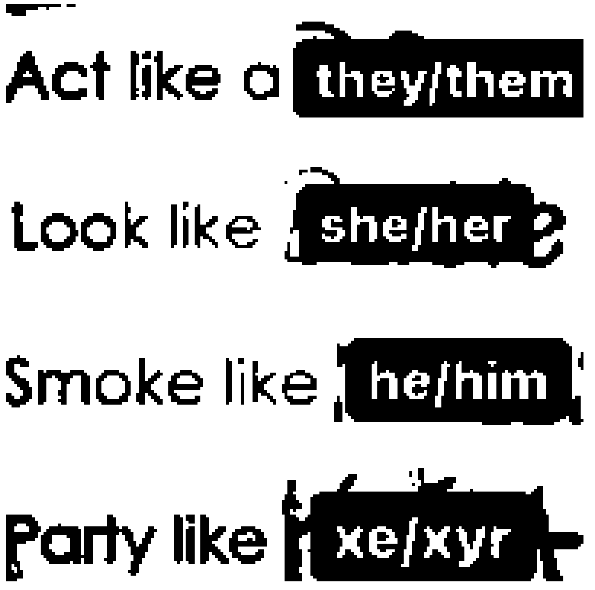
Full netizenship can only be achieved by accepting the four terms of POST-CORE: Post-authorship, post-identity, post-irony and lastly post-digital. Order is of importance.
The death of the author6
*
Art does not emerge from the individual anymore, but from the collective digital consciousness. Authorship is handed over to datasets, algorithms and archives. It’s the concept of artistic creation not as an individual invention but as a process of channeling broader consciousnesses. That post you just posted on Instagram is a mix of content and ideas you have read, seen, copied and liked before. The question is not who made this, but through which forces did it pass? You are a node in a network. You are an intersection of different ideas.
The post-author is a curator.
A selector. A remixer.
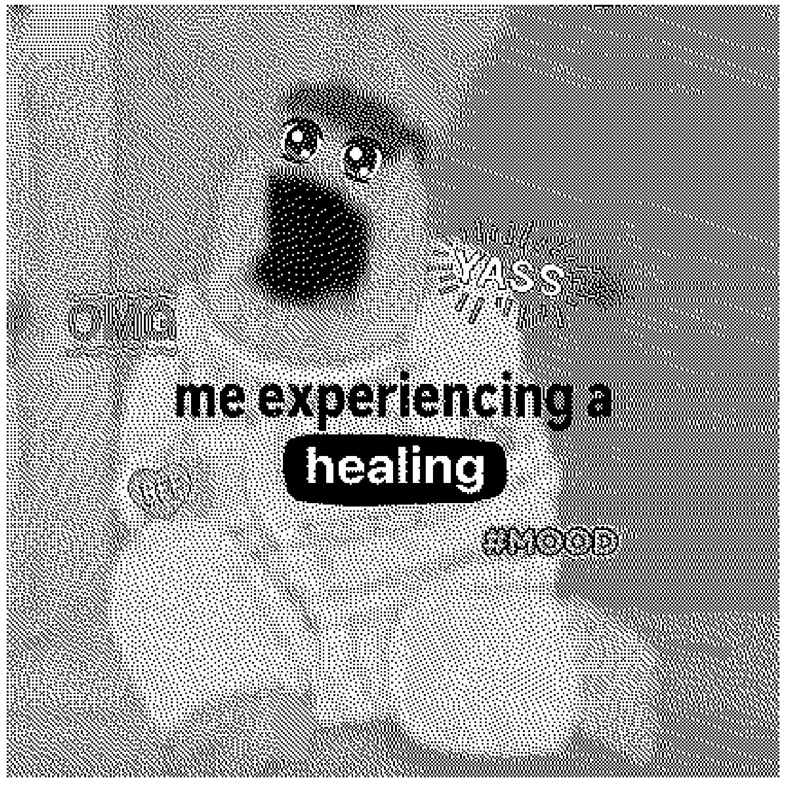
* You can tell that the earlier image has been edited multiple times into different memes by the white strips that cover previous text and the difference in fonts. The image metamorphized from the original (a stabbing today) to an earlier remix (full of dread) into a joyous butterfly (full of broth today).
II. POST-IDENTITY
The customization of the self
**
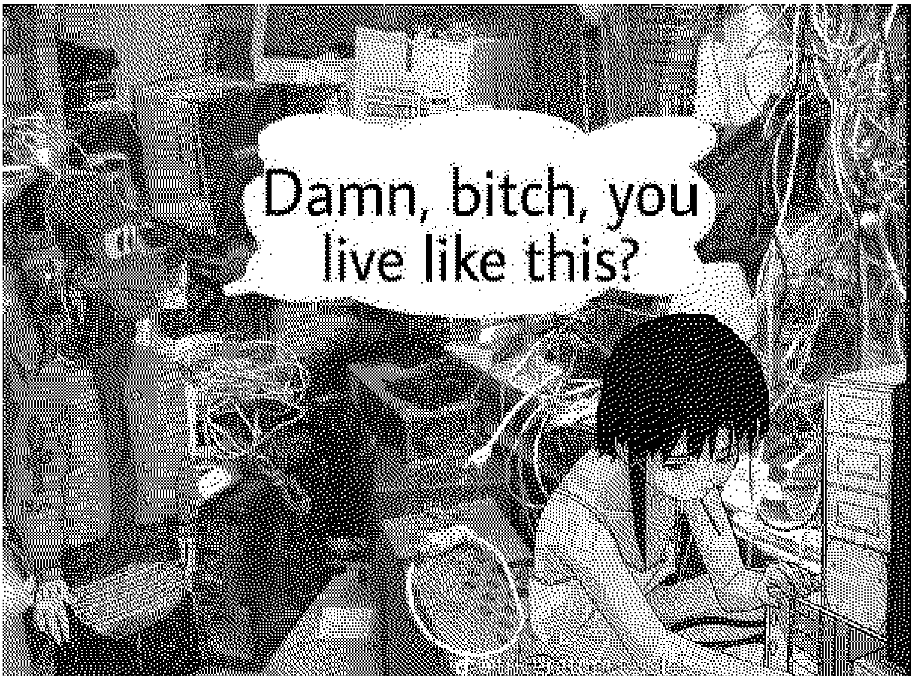
The self is and can be fragmented across platforms, contexts, timelines, and audiences. Your identity is multifaceted. You are not just one thing. You are multiple you’s, depending on the situation and location, just like an avatar. The self is no longer restricted by gender norms and stereotypes or discrimination. Performativity is no longer inauthentic, our physical body does not define who we are. Identity is now relational, anonymous and fluid.
** The image also does not have a stable author and has often been falsely accredited to Nicki Minaj, but I mainly would like to focus on the fluidity of gender expressed in the image. As queer philosopher Judith Butler points out in their book Gender Trouble: “There is no gender identity behind the expressions of gender; that identity is performatively constituted by the very ‘expressions’ that are said to be its results.” 7Identity is not representative of the physical self but is a collage of acts, language, and (pop-)cultural references. The image shows that identities do not have to be singular and can be modular. You don't party because you are a xe/xyr, your partying makes you a xe/xyr...
III. POST-IRONY
The return of sincerity
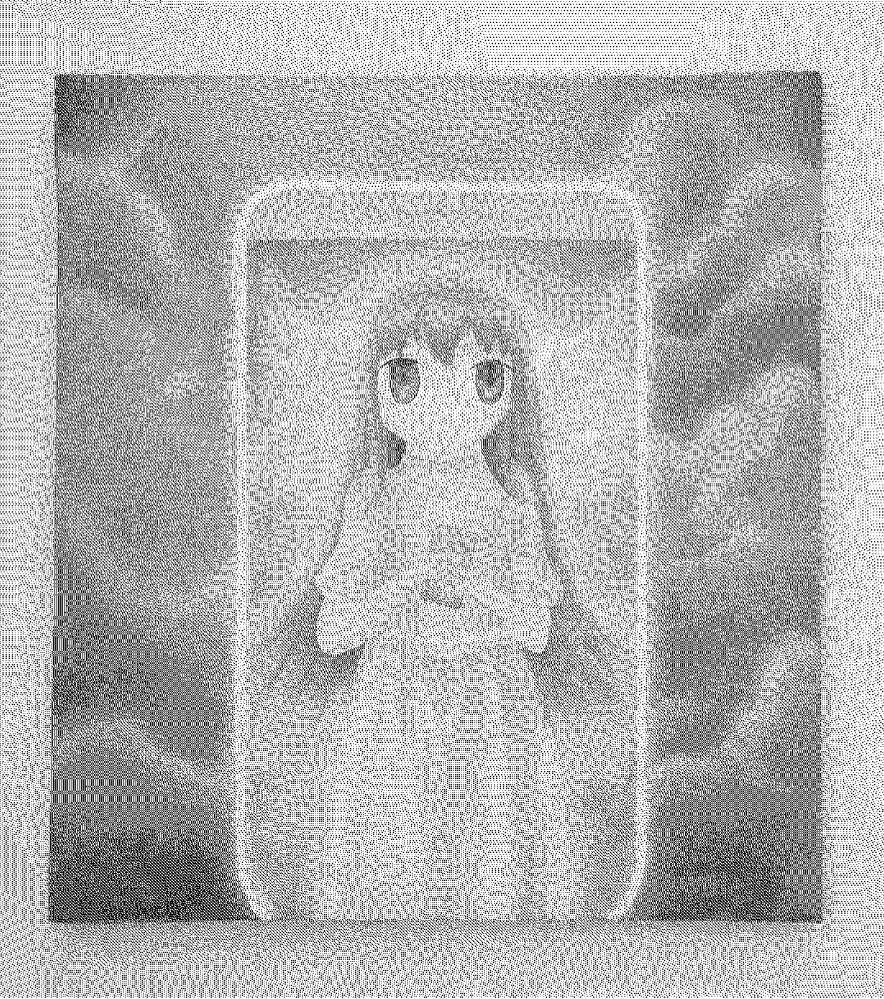
***
Post-irony is fully intentional. Post-irony embraces the cringe. After all, to be cringe is to be free. It is about being subversive towards actual irony by being genuinely sincere, this makes you based***. Accepting cringe makes you based. Everything that is sincere will be mocked eventually, but this notion is accepted in post-irony. It’s time to #heal.
*** Based used to be a word to describe someone who is addicted to crack-cocaine but has been reclaimed and transformed by American rapper Lil B (the BasedGod). He explains this in an inspiring video found on Instagram by @welcome.jpeg8:
“You can be based with no car, no super many clothes, and no money to spend at the mall. Based is how you feel inside, it means getting comfortable with yourself and your friends and moving on with our lives to a place where we trust and love ourselves. It's about building your own genuine style for people to love. Are you more worried about what you wear and what you drive? Don't be. You are who you are inside.”
*** Lyrics to Miley Cyrus by Lil B:
I'm Miley Cyrus (Swag)
I'm Miley Cyrus (Swag)
I'm Miley Cyrus (Swag swag)
I'm Miley Cyrus (Swag swag)
Cyrus, Cyrus (Swag)
VI. POST-DIGITAL
The over-normalization of the digital
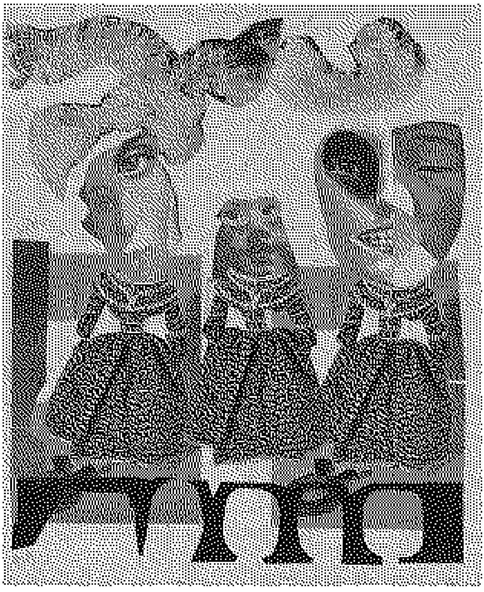
****Technology is fully embedded in our lives, normalized and part of our daily routine. A netizen is not just a visitor of the web, it is a permanent resident. We reside in the web. it’s the first thing we see when we wake up and the last thing before we go to bed. There is no ‘offline’ or ‘online’, the wall between the two has broken down. You are #lainpilled.
**** Lain is the main character of the cyberpunk anime series ‘Serial Experiments Lain’. The series talk about the Wired, a world like the internet. One day Lain receives an email from a recently deceased classmate saying that they aren’t dead but have left their physical body to exist in the Wired, claiming to have found God there. Being Lainpilled means you mentally are already in the Wired. From this internet subculture has spawned another hashtag, #godposting. It’s a type of roleplaying trend fed with religious iconography, mental illness and autofiction. “Users are encouraged to undergo a digital ego death ritual, using memes and shitposts as a way to plug into a collective unconscious online.”9
#godposting #shrineposting #schizoposting #POST-TRUTH
After these steps the path towards network spirituality is not an illogical one to go down. #Shrineposting, #schizoposting or #godposting, it is all just a form of post-truth to me, however you want to call it.
“Post-truth is an adjective defined as ‘relating to or denoting circumstances in which objective facts are less influential in shaping public opinion than appeals to emotion and personal belief’ Oxford Dictionary, 2017
*Post-truth was the word of the year in 2016.
These #posting types all work the same way: they are all based on personal experiences and emotions while still relating to a certain “collective consciousness” as earlier discussed. Truth is no longer dependent on verification, but on resonance, likes, and reposts. This is the perfect environment for network spirituality to thrive and grow since it does not work like an archetypal religion. There is no good or bad, you decide that for yourself. There is no god or higher power you need to believe in, only yourself. Any feelings or thoughts shared online are valid. I think this is a dangerous way of thinking as it says that all behavior is exempt of criticization, even violent and radical behavior such as racism, homophobia and sexism. You also ostracize yourself from everyone by thinking that your “truth” is the only truth and everything else can be dismissed. This can lead to radicalization and adoption of extreme political or ideological beliefs.
Take for example the paintings from Czech painter Eliška Jahelková: pastel colors, blurry airbrushed lines, the anime angel representing a beautiful meta-angel watching over you and your feed. Its holiness is not coded by tradition but by aesthetic and absurdity. There isn’t really a fixed narrative when you look at these paintings, they can be interpreted however you want. The angel is relational, not symbolic. It gains meaning through context, like a caption does to an Instagram post.
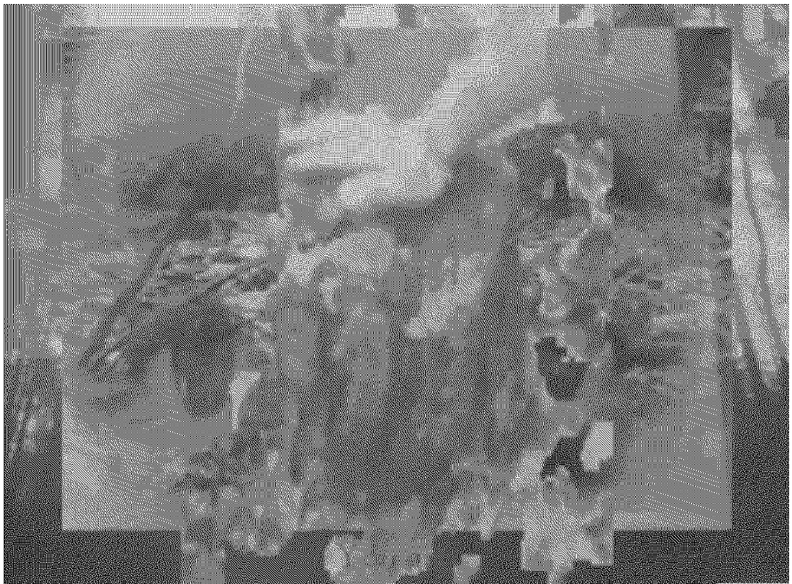
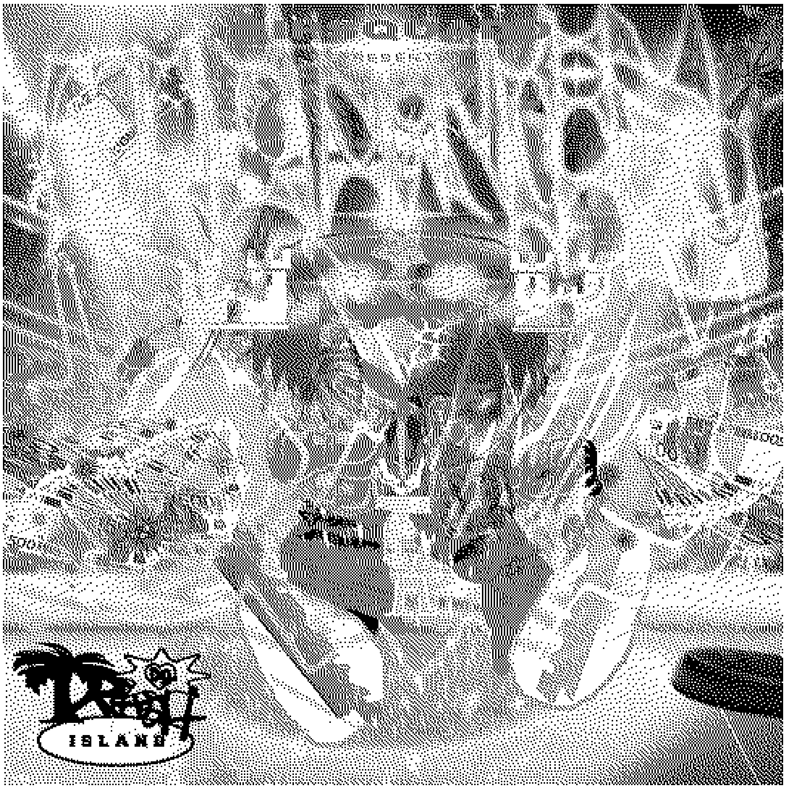
Eliška Jahelková
#lore #Schizo-core #Xpiritualism
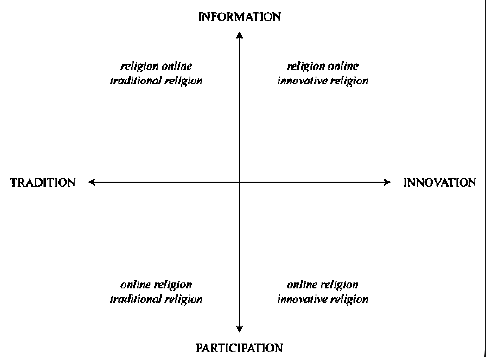
James Howard ‘untitled’, 2007“Network spirituality is a force that takes us back to our earliest dreams and memories, begging the question whether that desire to be divine is what makes us so human or the other way around.”10
BALD CURING TODAY. It looks like an ad you might find on a dodgy website, but it’s an artwork by James Howard, an artist and hacker who coined the term ‘schizo-core’. It’s a digital art movement from the mid 2000s inspired by the underground side of the internet in the 90s and early 2000s, think about scam emails, hacker culture and kitsch Photoshop graphics. It involves multiple layers of different images, symbols and text which possibly creates a new narrative or way of thinking, it’s a way of worldbuilding. Some of the imagery in the work, like the sigils and human diagram in the background, they remind me of ads for internet oracles or acupuncture diagrams I used to see on the internet when I was younger. Web design used to be maximalist and chaotic during this time, since the web was a decentralised space full of creativity and personality. Users felt more optimistic towards technology as it seemed to be more compatible with nature than consuming.
So, what does schizo-core actually mean? Howard explains this in an interview with Artsy; “It’s about taking familiar things from everyday life and using them in a way which makes them jump out of what we call normal...they channel forces we don’t normally experience [...] It’s a schizophrenic process which makes sense while not making sense, but releases something new into the world.”11 This paradoxical way of reasoning gives the freedom to experience the work on a more personal level and interpret it in your own way. Some viewers might feel like the juxtaposition of the images used feel disconnected, others might feel like it makes sense in a way. This collaging of various visual elements that seem random at first is nowadays called “schizocollaging”, a term coined by art critic Brian Droitcour. The most important aspect when it comes to schizocollaging is that the distinction between image, background, noise and shape (almost) collapses. Chaos is the central theme. This reminds me of the dada collages of the early 1920’s. Most dada artists were critical of the political and social structures of that time. Imperfection and improvisation were embraced and used as an attack on rationality, as they felt that rationality was just an illusion in times of war. With the current geopolitical tensions, climate catastrophes and genocides it is no wonder that collaging is making a comeback. We as humans seek patterns, as it implies regularity, especially in chaotic and insecure times like these.
Hannah Höch, Modenschau, 1925
A while ago I also came across some interesting but eerie videos on YouTube. I found out that they were videos made by the Lithuanian producer Yabujin but were deleted and later reuploaded by different users. I randomly clicked on one of them. YABUJIN - AZEROY 1：WAYS OF A SURGEON. The maximum quality of the video is 480p. There are two voice-overs, one of a young man, and the other heavily distorted. They speak in a language I cannot understand, but after some research it seems that the voices are speaking Azeroyyska, a language constructed by Yabujin himself. Just like their creator, the videos are shrouded in mystery. The collage of low-quality images and gifs creates a story open to interpretation, the brain feels as if it must fill in the missing pixels. “The poor image is no longer about the real thing — the originary original. Instead, it is about its own real conditions of existence”,12 mentions Hito Steyerl in her essay “In Defense of the Poor Image”. It feels as if we stepped into a hallucination, the almost incomprehensible images form a narrative that might feel familiar, like a déjà vu...
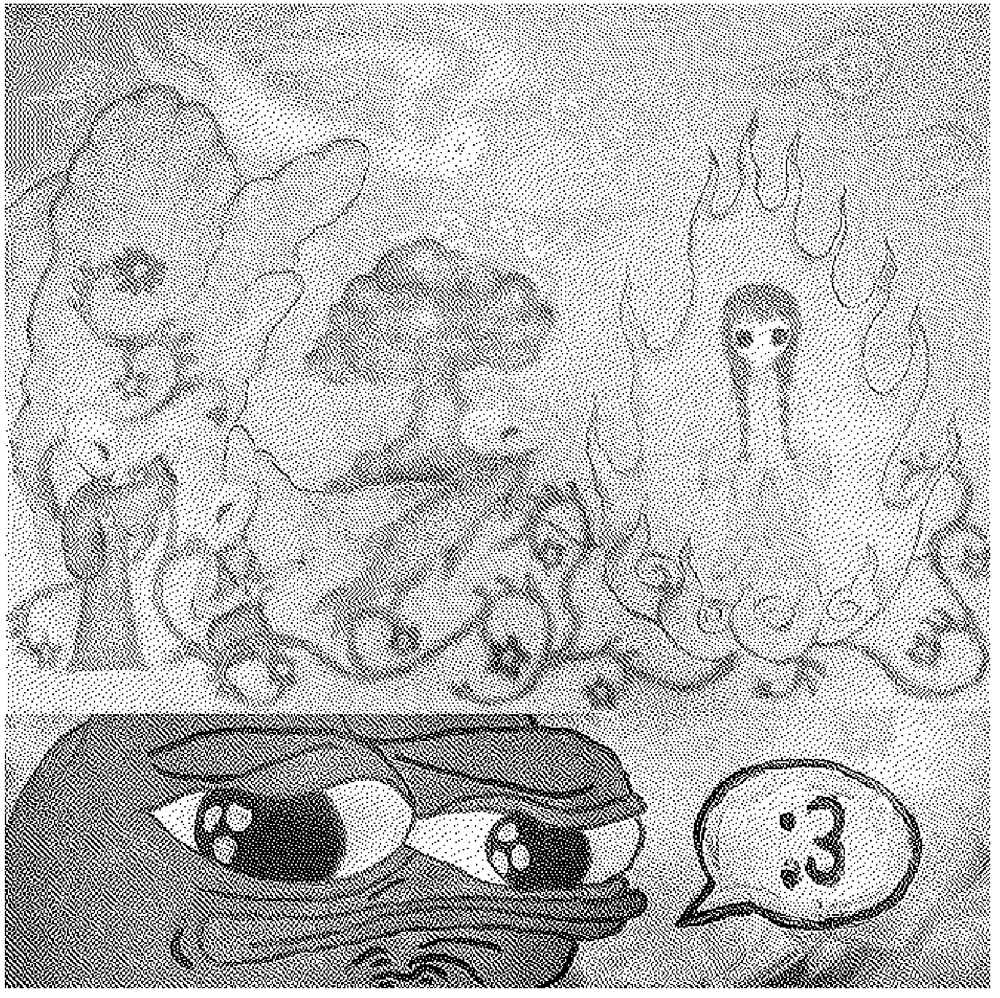
Screenshot from YABUJIN - AZEROY 1：WAYS OF A SURGEON
This type of aesthetic has become quite popular over the years. It started off as something you would see often in the underground music scene but surely bled onto the algorithms of TikTok and Instagram. It was more of a separate branch inspired by schizo-core than really a continuation of it. It started off when the Instagram user @3rd.world.elite started a new hashtag; #Xpiritualism. Xpiritualism is a web-based aesthetic that combines spirituality, surrealism and internet nostalgia and has been popularized by music artists such as Yabujin and Drain Gang. Just like schizo-collaging it makes use of layering images and symbols to create an immersive landscape, but there isn’t much information about it available on the internet. I would assume that it is a kind of FOMO of the time when the internet was actually mysterious and unmonitored, as most of the users under this hashtag are Gen Z and have not been able to experience this era themselves.
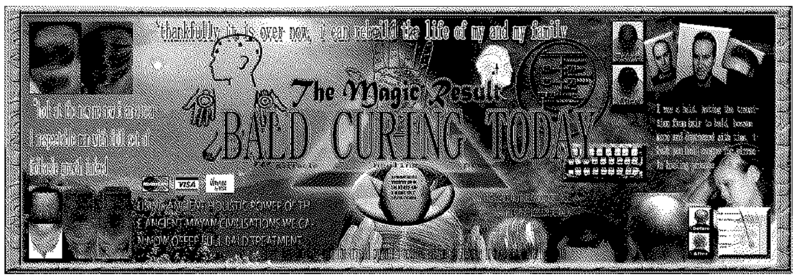
Bladee, Icedancer, 2018 @third-world-quality on Tumblr
Throughout my research I realized that the term network spirituality primarily has been used and defined by the mysterious writer Charlotte Fang from Remilia Corporation. After further research into this collective, it was revealed that Charlotte Fang is a pseudonym of Krishna Okhandia, who specifically posed as an e-girl online and has received quite the backlash online for controversial tweets. Aside from this, I do believe network spirituality is an interesting term when taken out of this hyper-niche context and aesthetic. I’ve noticed quite a surge in religious and spiritual content online, from Christian influencers to inspiring sermons by tech giants. Although it could all fall under the same umbrella term (Network Spirituality), it might be helpful to map these phenomena. Media studies professor Piotr Siuda has visualized this in his article Mapping Digital Religion: Exploring the Need for New Typologies. Although I believe that the examples for Network Spirituality I’m about to provide do not occupy a singular coordinate on this chart, I do think it is helpful in naming these examples for clarity.
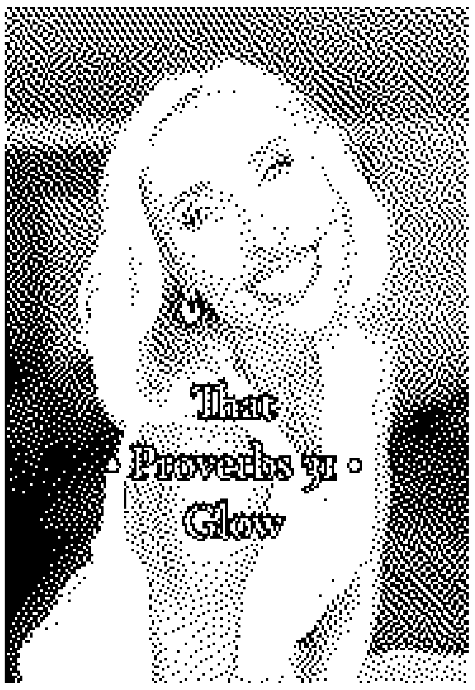
Piotr Siuda, The visual frame for mapping online religious spaces.13
#religionOnline vs.. #onlineReligion
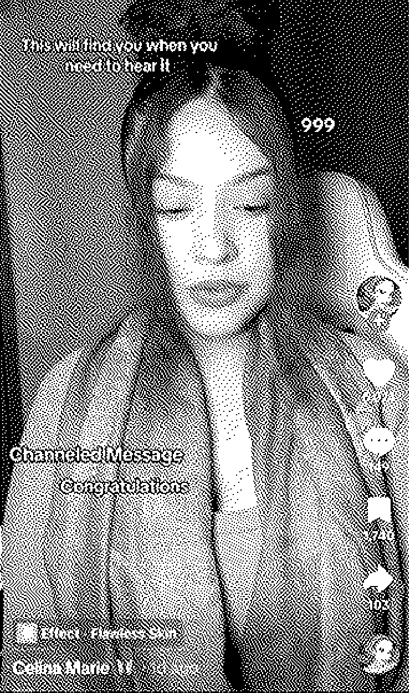
“The Jesus glow isn’t real…”, is how one of the videos I found on #christiantiktok starts. It seems to be a before and after video showing what Gen-Z’ers looked like before and after converting to Christianity. It’s supposedly the healthy glow you get when you open your heart to God. What intrigued me was that these videos were all about appearance: they started wearing different makeup, went back to their natural hair color and their skin looks all glowy. What was also interesting is that the lighting in most of these videos were also intentional. It also seems that most of the before images were taken inside while the after images were taken outside in the sun. This is just one of the trends I have found on TikTok among young Christians.
What’s happening here is that religion is not shared through scripture but through vibes. Sincerity and performativity work together to create the perfect content that is attractive for young people. But why is it that young people online are turning towards religion? Sociologist at University of Tilburg, Quita Muis, argues that feelings of security and progressiveness are correlated. Precarity among young people (think of the housing crisis and climate change) currently is motivating them to find guidance in rituals and symbols.14 Religion might also seem attractive as it can provide community and meaning, away from the doomscrolling and feelings of emptiness. I think it’s quite ironic that this religious content is being posted on those same despondent platforms that might have caused these feelings of emptiness in the first place.
#Christiantiktok is mostly about the content itself, but what happens when the algorithm becomes an icon of worship? Researchers at Pennsylvania State University have defined this phenomenon as Algorithmic conspirituality. “Algorithmic conspirituality describes how TikTok users ascribe divine significance to especially well-tailored content shown to them in their FYP, even when they understand how the algorithm works”15Data and algorithms have acquired a sublime quality and are often blindly trusted, look at period tracking apps and sport watches for example. Just like #christiantiktok, algorithmic conspirituality can offer meaning to existence. I found the #channeledmessage hashtag on TikTok, where videos are made by users who claim to have received a personal message from ‘the divine’. This loops back to the earlier mentioned Pokémon card tarot readings, as these videos also don’t have any captions or hashtag. It’s as if the algorithm knows more about you than you know of yourself, it must be fate… I do believe that ‘online religion’ is not a suitable term for this phenomenon, as religion is more organized and follows a strict list of rules whereas algorithmic conspirituality does believe in a higher being but does not adhere to any set structure.
I started writing this thesis thinking that I might go insane if I dive too deeply into this and started doubting myself. Does anything I write even make sense? Am I making all of this up right now? During research it only got more confusing as there is so much content from every corner of the internet. I wasn’t quite sure what was exactly true anymore or meant ironically, which is quite frightening.
Bibliography
Alexa, Alexandra. “Former Hacker James Howard Turns the Dark Web into Art | Artsy.” Artsy, 2015. https://www.artsy.net/article/artsy-editorial-former-hacker-james-howard-turns-the-dark-web.
Aydin, Ciano, Margoth González Woge, and Peter-Paul Verbeek. “Technological Environmentality: Conceptualizing Technology as a Mediating Milieu.” Philosophy & Technology 32, no. 2 (April 10, 2018): 321–38. https://doi.org/10.1007/s13347-018-0309-3.
Barthes, Roland. “The Death of the Author.” Essay. In Image-Music-Text, 142–48. New York, New York: Hill and Wang, 1977.
Butler, Judith. “Identity, Sex, and the Metaphysics of Substance.” Essay. In Gender Trouble: Feminism and the Subversion of Identity, 22–33. New York City, New York: Routledge, 1999.
Cascone, Kim. “The Aesthetics of Failure: ‘Post-Digital’ Tendencies in Contemporary Computer Music.” Computer Music Journal 24, no. 4 (December 2000): 12–18. https://doi.org/10.1162/014892600559489.
Connolly, Denny, Ashley Fike, Sammi Caramela, and Luis Prada. “Post-Irony Is the Only Thing Left in the World That Gets a Reaction.” VICE, August 11, 2024. https://www.vice.com/da/article/the-past-explains-our-present-wave-of-post-irony/.
Cramer, Florian. “What Is ‘Post-Digital.’” Hz #19 - “what is ‘post-digital,’” 2013. https://www.hz-journal.org/n19/cramer.html.
Fang, Charlotte. Web log. Network Spirituality, Collected Commentaries (blog), 2022. https://paragraph.com/@charlemagnefang/network-spirituality-collected-commentaries.
Flusser, Vilém. “To Imagine.” Essay. In Into the Universe of Technical Images, 12–12. Minneapolis, Minnesota: University of Minnesota, 2011.
Lorenz, Taylor. “Text Memes Are Taking over Instagram (Published 2021).” The New York Times, 2021. https://www.nytimes.com/2021/08/09/technology/instagram-text-memes.html.
Maurer, Luna, Edo Paulus, Jonathan Puckey, and Roel Wouters. “Conditional Design.” Conditional design, 2013. https://conditionaldesign.org/manifesto/.
Niemyjski, Anielek, and Anielek Niemyjski. “Longing for Locality: Nostalgia and Resistance in the Age of Platforms.” INC Longform, 2025. https://networkcultures.org/longform/2025/12/22/longing-for-locality-nostalgia-and-resistance-in-the-age-of-platforms/#_ftn3.
Peperkamp, Samuel. “Wat Vindt Gen Z Hot Aan God?” Wat vindt Gen Z hot aan god?, 2026. https://www.vn.nl/wat-vindt-gen-z-hot-aan-god.
Publig, Sophie, and Claire Elise Herzberg. “‘where I Shrinepost from.’” ŠUM, 2025. https://www.sum.si/journal-articles/where-i-shrinepost-from.
Sherbert, Biz. “Intimacy and the Machine: Godposting – or: New Internet Esotericism.” Various Artists, November 16, 2022. https://various-artists.com/godposting/.
Siuda, Piotr. “Mapping Digital Religion: Exploring the Need for New Typologies.” Religions 12, no. 6 (May 21, 2021): 373. https://doi.org/10.3390/rel12060373.
Sloan, Nathaniel. “Beyond Based and Cringe: An Examination of Contemporary Modes of Irony and Sincerity in Cultural Production.” InVisible Culture, May 27, 2022. https://www.invisibleculturejournal.com/pub/beyond-based-and-cringe/release/1.
Steyerl, Hito. “In Defense of the Poor Image.” Journal #10, 2009. https://www.e-flux.com/journal/10/61362/in-defense-of-the-poor-image.
Yalcinkaya, Günseli. “Are You Lainpilled? How Serial Experiments Lain Took over the Memescape.” Dazed, November 24, 2022. https://www.dazeddigital.com/life-culture/article/57533/1/serial-experiments-lain-lainpilled-cyberpunk-memes-tiktok.
Yalcinkaya, Günseli. “Blessed and Emoji-Pilled: Why Language Online Is so Absurd.” Dazed, October 23, 2023. https://www.dazeddigital.com/life-culture/article/61151/1/blessed-and-emoji-pilled-why-language-online-is-so-absurd.
Yalcinkaya, Günseli. “God in the Machine: The Emergence of Nu-Spiritualism Online.” Dazed, March 21, 2023. https://www.dazeddigital.com/life-culture/article/58467/1/god-in-the-machine-the-emergence-of-nu-spiritualism-online-spring-2023.
Yalcinkaya, Günseli. “Why Does Nothing Feel Real Anymore?” Dazed, July 25, 2024. https://www.dazeddigital.com/life-culture/article/63208/1/why-does-nothing-feel-real-anymore-donald-trump-prada.
Charlotte Fang, web log, “Network Spirituality, Collected Commentaries” (blog), 2022, https://paragraph.com/@charlemagnefang/network-spirituality-collected-commentaries.
Yalcinkaya, Günseli. “God in the Machine: The Emergence of Nu-Spiritualism Online.” Dazed, March 21, 2023. https://www.dazeddigital.com/life-culture/article/58467/1/god-in-the-machine-the-emergence-of-nu-spiritualism-online-spring-2023.
Vilém Flusser, “To Imagine,” essay, in Into the Universe of Technical Images (Minneapolis, Minnesota: University of Minnesota, 2011), 12–12.
Ciano Aydin, Margoth González Woge, and Peter-Paul Verbeek, “Technological Environmentality: Conceptualizing Technology as a Mediating Milieu,” Philosophy & Technology 32, no. 2 (April 10, 2018): 321–38, https://doi.org/10.1007/s13347-018-0309-3.
Derived from the pill metaphor from the Matrix, whitepill stands for choosing good over evil, an optimistic worldview in times of despair, hyperoptimism
Roland Barthes, “The Death of the Author,” essay, in Image-Music-Text (New York, New York: Hill and Wang, 1977), 142–48.
Judith Butler, “Identity, Sex, and the Metaphysics of Substance,” essay, in Gender Trouble: Feminism and the Subversion of Identity (New York City, New York: Routledge, 1999), 22–33.
Günseli Yalcinkaya, “Are You Lainpilled? How Serial Experiments Lain Took over the Memescape,” Dazed, November 24, 2022, https://www.dazeddigital.com/life-culture/article/57533/1/serial-experiments-lain-lainpilled-cyberpunk-memes-tiktok.
Charlotte Fang, web log, Network Spirituality, Collected Commentaries (blog), 2022, https://paragraph.com/@charlemagnefang/network-spirituality-collected-commentaries.
Alexandra Alexa, “Former Hacker James Howard Turns the Dark Web into Art | Artsy,” Artsy, 2015, https://www.artsy.net/article/artsy-editorial-former-hacker-james-howard-turns-the-dark-web.
Hito Steyerl, “In Defense of the Poor Image,” Journal #10, 2009, https://www.e-flux.com/journal/10/61362/in-defense-of-the-poor-image.
Piotr Siuda, “Mapping Digital Religion: Exploring the Need for New Typologies,” Religions 12, no. 6 (May 21, 2021): 373, https://doi.org/10.3390/rel12060373.
Samuel Peperkamp, “Wat Vindt Gen Z Hot Aan God?” Wat vindt Gen Z hot aan god? 2026, https://www.vn.nl/wat-vindt-gen-z-hot-aan-god.
Ankolika De et al., “‘Whoever Needs to See It, Will See It’: Motivations and Labor of Creating Algorithmic Conspirituality Content on TikTok,” Proceedings of the ACM on Human-Computer Interaction 9, no. 7 (October 16, 2025): 1–27, https://doi.org/10.1145/3757447.